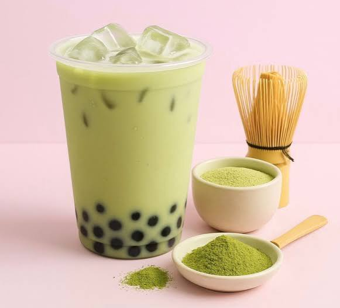

CBCSC Boba Drops Walkthrough
Hello Colonel By Computer Science Club!
This is an example website of what you can submit for Hackclub Boba Drops
Read the official guide here.

Matcha Boba
This is what you will learn how to make 😋
Matcha Boba Recipe
Overview
- Prep Time: 5 minutes
- Cook Time: 15 minutes
- Servings: 2 drinks
- Difficulty: Easy
Ingredients
- 1/3 cup quick-cooking black tapioca pearls
- 4 cups water
- 2 tablespoons brown sugar or maple syrup
- 2 to 4 teaspoons matcha powder
- 1/4 cup hot water (80°C / 175°F)
- 2 cups milk of choice
- 1 cup ice cubes
Instructions
- Bring 4 cups of water to a rolling boil in a small pot. Add the tapioca pearls, stir gently so they don't stick, and cook according to your package instructions (usually 5 minutes for quick-cooking pearls, or 15–20 minutes for standard pearls) until soft and chewy.
- Drain the cooked pearls and rinse them briefly under cold water to stop the cooking. Transfer them to a bowl and stir in the brown sugar or maple syrup. Let them soak for 10–15 minutes to absorb the sweetness.
- Sift the matcha powder into a small bowl to remove any clumps. Add the hot water and whisk briskly in a "W" or "M" motion with a bamboo whisk (chasen) or handheld milk frother for about 1 minute until smooth and foamy.
- Divide the sweetened boba pearls and syrup evenly between two tall glasses. Fill the glasses with ice cubes, pour in 1 cup of milk per glass, and slowly pour the whisked matcha over the top to create a layered effect. Stir with a wide boba straw before drinking.